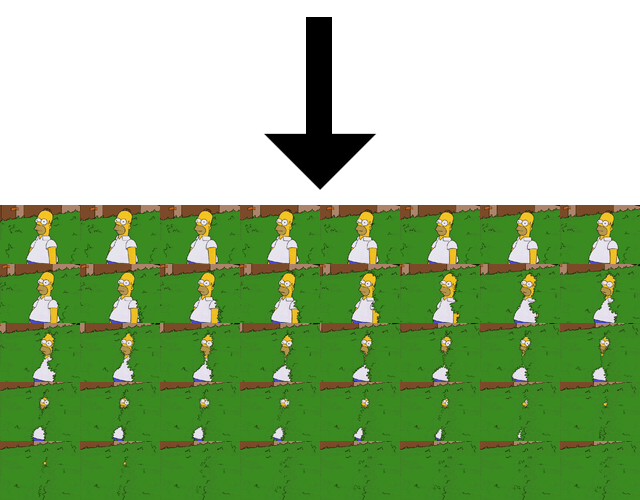
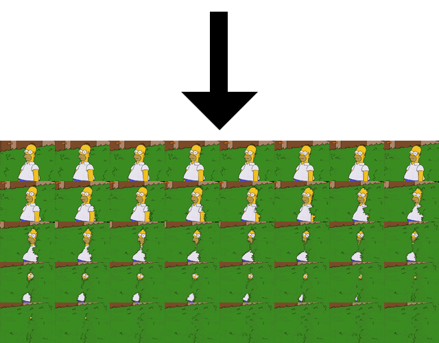
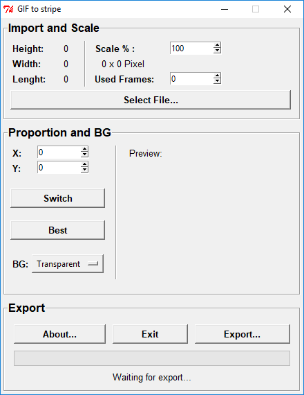
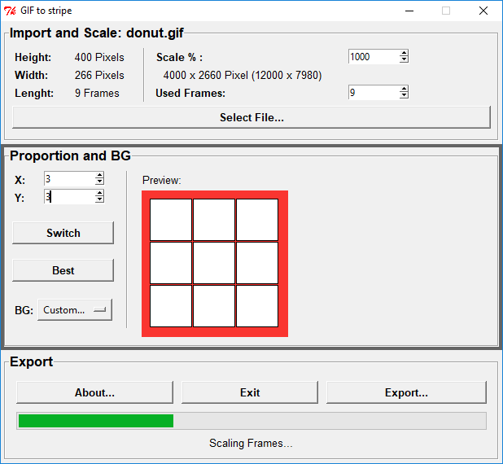

Das .GIF Bild-Format ermöglicht mehrere Einzelbilder zu einer Animation zusammenzufügen. Manche Endanwendungen unterstützen kein GIF-Animationen sondern benötigen diese in Form eines "Filmstreifens", bei dem alle Einzelbilder nebeneinander liegen. Viele Converter erzeugen bei der Umwandlung von GIF zu Filmstreifen ein eindimensionales Band, was schnell zu sehr großen X-Werten und so zu Kompatibilitätsproblemen führen kann (z.B.: Die Unreal Engine 4 unterstützt Bilder nur bis zu einer maximalen Auflösung von 8192x8192 Pixeln). Der GIF2STRIPE Converter ermöglicht eine zwiedimensional Verteilung der Frames und bietet darüber hinaus weitere hilfreiche Features bei der Umwandlung von GIF-Bildern zu Filmstreifen.
 

Zuerst sollte mit einem Klick auf "Select File..." ein GIF-Bild geöffnet werden.
Erläuterung der Oberfläche:
- Scale: Skalierung der Einzelbilder in Prozent, um ggf. die Gesamtauflösung zu senken/erhöhen
- Used Frames: Anzahl der verwendeten Einzelbilder, ermöglicht das Herrauskürzen von Frames, hilfreich wenn die Gesamtanzahl eine Primzahl ist
- X/Y: Seitenverhältnis des Zielbildes
- Switch: Verstauscht X und Y
- Best: Bestimmt das optimale Seitenverhältnis
- BG: Menü zur Wahl der Hintergrundfarbe für GIFs mit Transparenz (Schwarz, Weiß, Tranzparent, Benutzerdefiniert)
Der Ladebalken unten zeigt in Echtzeit den Fortschritt der Skalierung, der Zusammenfügung und des Abspeicherns. 